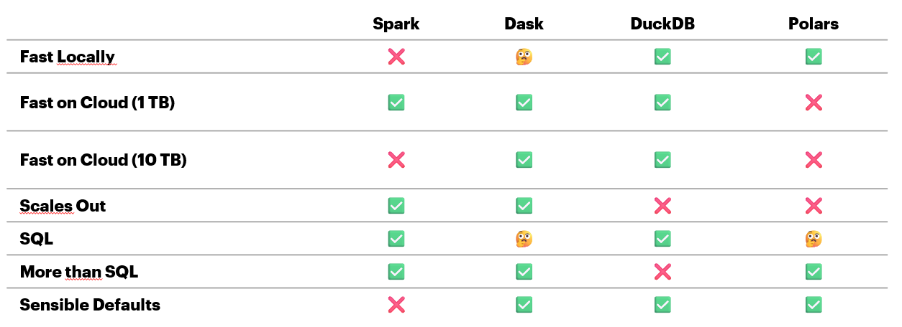
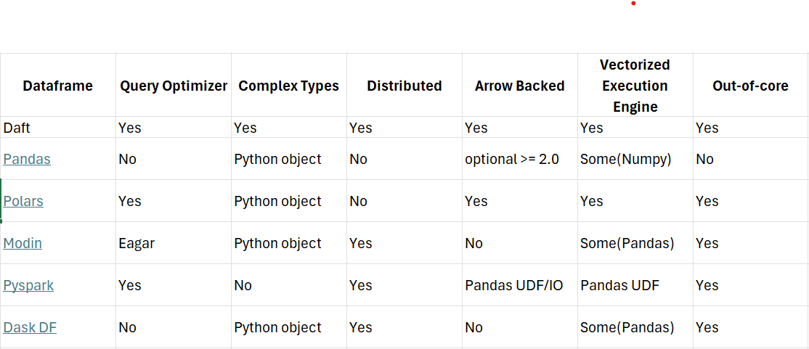
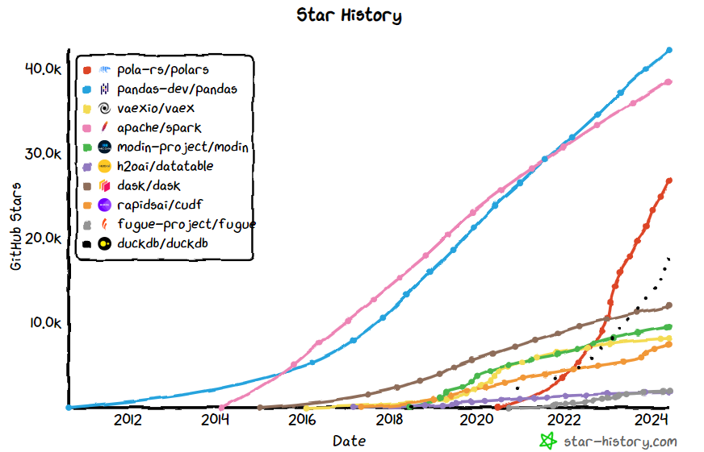
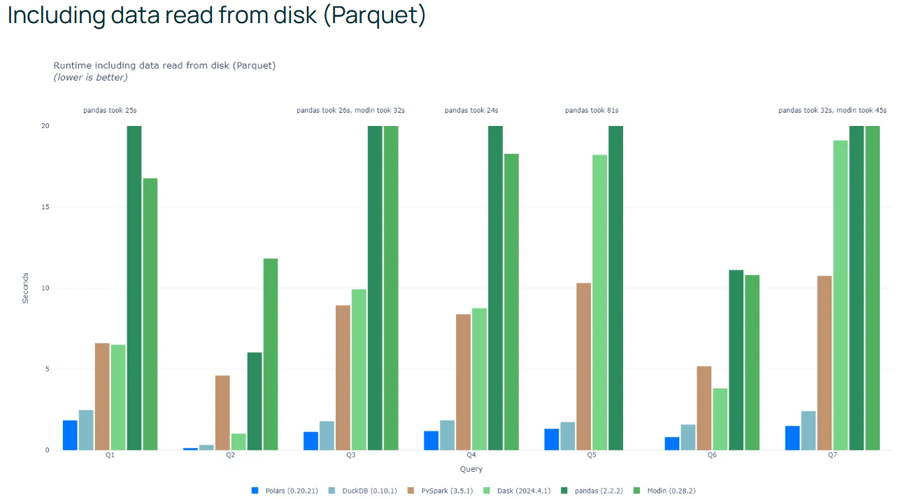

Performances & Choix du framework
Critères de choix
Le choix du framework de gestion des dataframes est un choix clé qui doit être l’output d’une phase de cadrage technique.
Cette phase prendra a minima en compte les éléments suivants:
la performance pure apportée par ce framework
la capacité de scalabilité de ce framework sur différentes infrastructures
le caractère populaire du framework en question
la stratégie de la DSI
Documentation & Ressources
Comparaison des framework (Coiled)
Source : Coiled - Comparaison des frameworks
Source : Youtube - Dask DataFrame is fast now - Florian Jetter (Coiled) @ PyData
Comparaison des framework (Kestra)
Polars
Polars est un framework de gestion de dataframes en Rust, qui propose une API en Python. Il est de plus en plus populaire et est utilisé par de nombreuses entreprises.
Source : https://star-history.com/
Polars est un framework très performant, comme le montre les benchmarks suivants :
Source : https://pola.rs/posts/benchmarks
Choix retenu
Important
Le modèle ALM d’Accenture est réalisé via polars, pour les raisons suivantes :
performance apportée par Polars en local
capacité de parallélisation de Polars (CPU aujourd’hui, GPU bientôt)
lisibilité / expressivité du langage
prise en main rapide